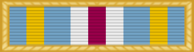

Unit awardJMUA
For joint units cited for meritorious achievement or service superior to what is normally expected.
Check your eligibility and build your ribbon rackYou can't apply for this one yourself. Your unit has to have received it, and you have to have been assigned or attached to the unit and present for duty during the cited period.
Authorized by the Secretary of Defense on June 10, 1981, this award was originally called the Department of Defense Meritorious Unit Award. It is awarded in the name of the Secretary of Defense to joint activities for meritorious achievement or service, superior to that which is normally expected, for actions in the following situations; combat with an armed enemy of the United States, a declared national emergency, or under extraordinary circumstances that involve national interests.
All joint units and activities (as defined in DOD 1348.33-M, paragraph B.1.) are eligible for award of the Joint Meritorious Unit Award (JMUA) in recognition of exceptionally meritorious conduct in the performance of outstanding service. However, a unit's or activities outstanding accomplishment of its normally assigned and expected mission is not in and of itself sufficient justification for award approval. Instead, qualifying achievements must be superior to that which is expected under one of the following conditions and should be operational in nature.
Eligibility for the JMUA is only to those members of the armed forces of the United States who were present at the time and directly participated in the service or achievement for 30 days or more, or for the period cited if less than 30 days, shall be authorized to wear the JMUA ribbon. Members must be permanently assigned or attached by official orders to the joint unit receiving the JMUA. Local commanders may waive, on an individual basis, the 30-day minimum time requirement for individuals (e.g., Reserve personnel on active duty and temporary duty and/or temporary assigned duty personnel), who, in the opinion of the commander contributed directly to the achievement cited, and were assigned on official orders to the awarded unit during the approved time frames. Service units or individuals deployed in support of a joint task force (JTF), but not assigned and/ or attached to the JTF by official orders, are not eligible for the JMUA, even if they are under the operational control of the JTF. The Services, may award appropriate Service unit awards to their units assigned and/or attached to a JTF. Additional awards are indicated by an oak-leaf cluster worn on the ribbon.
To find a listing of all approved JMUAs, please consult DOD 1348.33-M dated September 1996; or review a listing of approved Air Force Unit Awards from 1991 to present, or approved DOD Awards (to include the JMUA) at: United States Air Force Unit Award - DOD Awards.
This award ribbon is identical to the Department of Defense Superior Service Medal ribbon, indicative of the fact that the service performed would have been similar to warrant the award of this medal to an individual. It has a center stripe of red, flanked on either side by equal stripes of white, light blue and gold, with a narrow stripe of light blue at the edge. The ribbon is within a gold colored 1/16 inch wide metal frame with laurel leaves. Similar to other Army and Air Force unit awards, it is worn in the same manner.
Oak Leaf Cluster
Source: Joint Meritorious Unit Award fact sheet, Air Force's Personnel Center